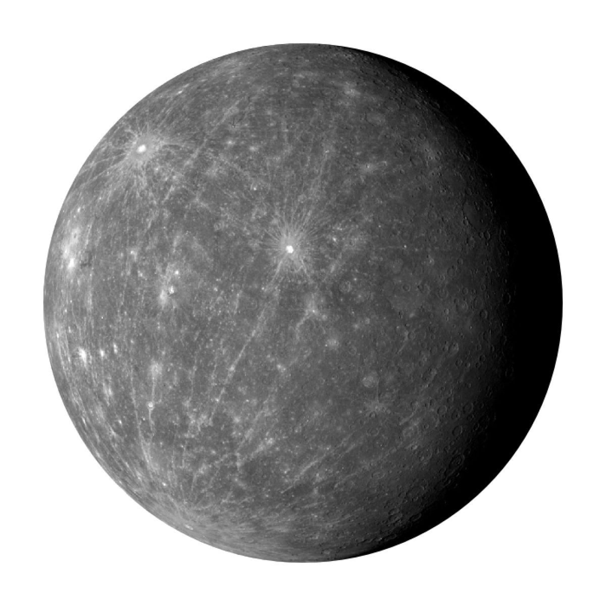

Почему Меркурий так называется?
Названия многих небесных тел происходят из древнеримского божественного пантеона. Причина, почему именно Меркурий получил такое имя, неизвестна. Более того, в зависимости от источника планета называлась по-разному. В письменности древних греков ее упоминали как Гермес и Аполлон. В Вавилоне эта планета была известна в качестве Напу. Но официальное название закрепилось после римлян, которые отождествляли Меркурий с богом торговли.
- Плотность — 5430 кг/м3
- Масса — 0,055 земного веса (3,3*1023 кг)
- Диаметр экватора — 4880 км
- Наклон оси — 0,01°
- Длина суток — 59 земных дней
- Ср. температура на поверхности планеты – -73°
- Ср. расстояние до солнца — 58 млн км
- Продолжительность года — 88 земных дней
- Скорость вращения вдоль орбиты — 48 км/с
- Эксцентриситет орбиты — 0,0206
- Наклон орбиты к эклиптике — 7°
- Скорость свободного падения — 3,7 м/с2
Жизнь на Меркурии
Для зарождения жизни на Меркурии неподходящие условия. Чтобы на планете появились организмы, способные воспроизводить себе подобных, необходимо соблюдение ряда условий. В частности нужно, чтобы вода в течение длительного времени не замерзала и не испарялась. Но на Меркурии наблюдаются значительные колебания температур, из-за которых невозможно зарождение жизни. Кроме того, этому помешала масштабная бомбардировка планеты метеоритами, которая произошла примерно 3,9 млрд лет назад.
День и ночь
Поскольку Меркурий медленно вращается вокруг собственной оси, одно из полушарий планеты в течение продолжительного срока обращено в сторону Солнца. В связи с этим, смена дня и ночи происходит крайне редко. У Меркурия данный процесс занимает существенно больше времени, чем на других планетах Солнечной системы.
Ось Меркурия отклонена от орбиты всего на 7 градусов. Данная особенность приводит к тому, что на планете не наблюдается смены времен года. По той же причине в районе полюсов есть зоны, на которые никогда не попадает солнечный свет.
Интересный факт: день или ночь здесь длятся ровно столько же, сколько и год. Объясняется это тем, что длина суток не намного меньше продолжительности движения планеты по орбите (88 дней).
Температура
Отсутствие атмосферы делает Меркурий похожим на Луну. На первой планете, со стороны прогреваемой Солнцем, температура повышается до +430 градусов Цельсия. На темной области Меркурия поверхность быстро остывает. Ночью на планете температура опускается до -180 градусов. Однако этим не ограничиваются особенности Меркурия. Поверхностный слой планеты рыхлый и отличается слабой теплопроводностью. Поэтому уже на глубине в метр температура породы стабилизируется на отметке в +75 градусов.